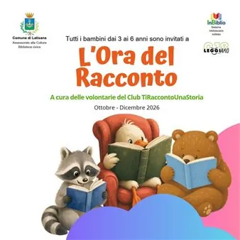

da mer 21 ott a lun 14 dic
L'ora del racconto
Da ottobre a dicembre 2026 la Biblioteca Civica di Latisana ospita "L'Ora del Racconto", un ciclo gratuito di letture ad alta voce per bambini dai 3 ai 6 anni curato dal Club TiRaccontoUnaStoria.
 Indicazioni
Indicazioni
- Costi e prenotazioni
- Costo non indicato · Prenotazione non indicata
- Programma
- Programma da verificare. Apri la fonte ufficiale per orari e possibili aggiornamenti.
- In caso di maltempo
- Nessuna indicazione specifica pubblicata.
- Note
- Acquisito automaticamente dalla fonte.
L’EVENTO
Descrizione completa
Tornano a Latisana le letture ad alta voce dedicate ai più piccoli con la rassegna "L'Ora del Racconto", un ricco ciclo di incontri in programma da ottobre a dicembre 2026 e rivolto a tutti i bambini dai 3 ai 6 anni.
Gli incotri si terranno presso la Biblioteca Civica di Latisana (c/o Centro Polifunzionale, Via Goldoni 22, Latisana). I momenti di lettura in biblioteca si terranno secondo il seguente calendario: Ottobre: Mercoledì 21 ottobre (ore 17:00-18:00) e Sabato 31 ottobre (ore 10:30-11:30). Novembre: Sabato 14 novembre (ore 10:30-11:30) e Lunedì 23 novembre (ore 17:00-18:00). Dicembre: Mercoledì 2 dicembre (ore 17:00-18:00) e Lunedì 14 dicembre (ore 17:00-18:00). Partecipazione gratuita con iscrizione obbligatoria.
Per maggiori info ed iscrizioni: biblioteca@comune.latisana.ud.it | 0431 525179 - Cellulare 338 6879837
IL PROGRAMMA
Programma e orari
Appuntamenti raccolti dalle fonti elencate. Dove manca un orario, non è ancora disponibile in questa scheda.
Programma pubblicato
- Dal 2026-10-21 al 2026-12-14
INFORMAZIONI UTILI
Prima di partire
- Controllare la fonte prima di partire.
ORGANIZZAZIONE